三井海洋富士號
Mitsui Ocean Fuji
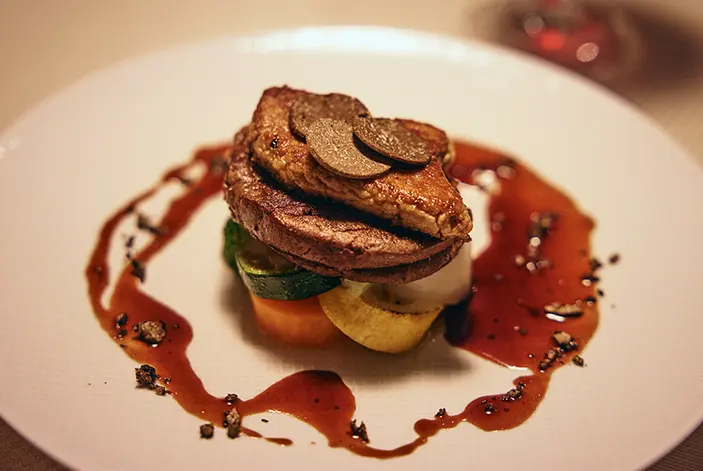
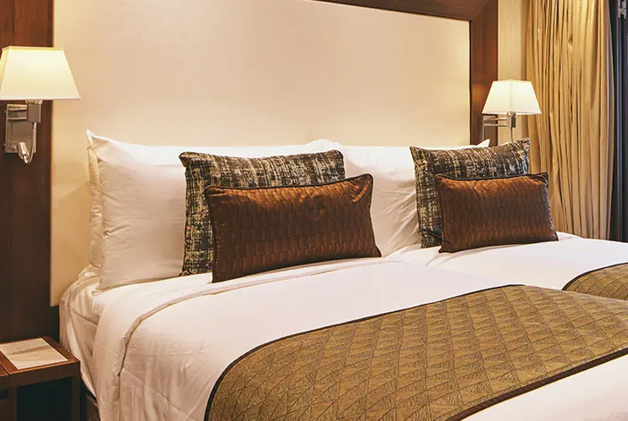
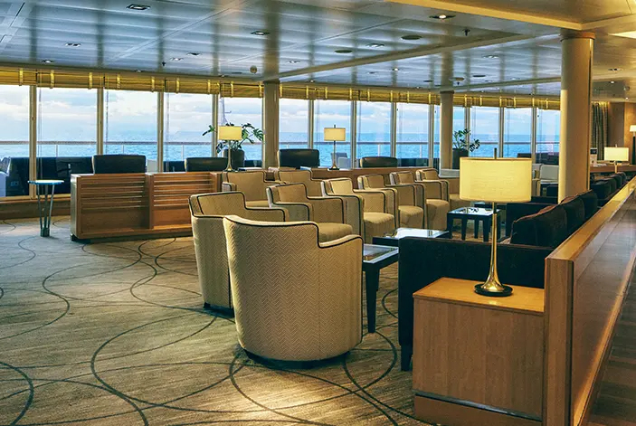
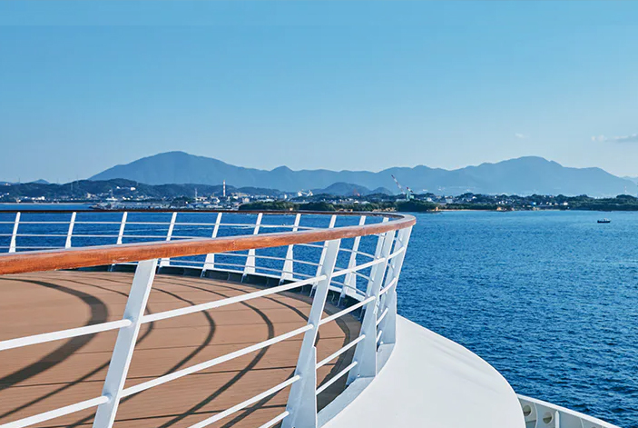
甲板平面圖
Deck Plans
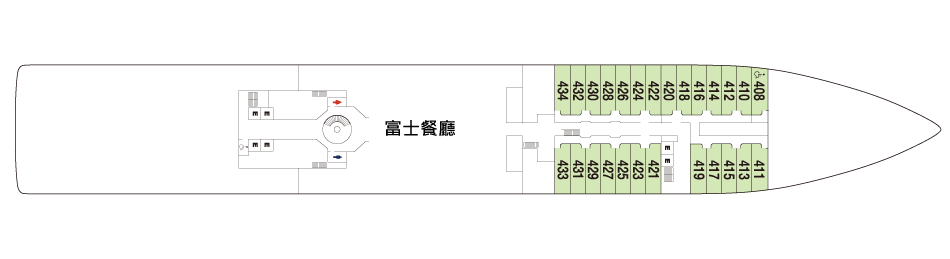
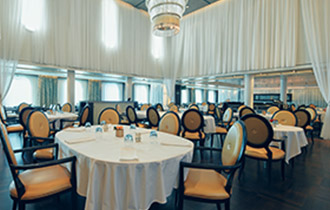
富士餐廳
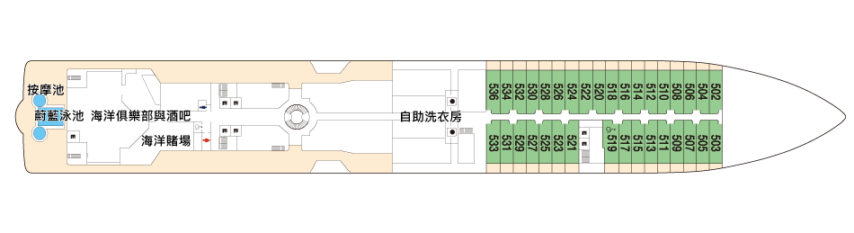
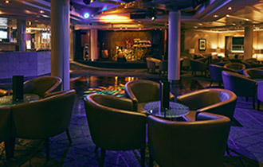
海洋俱樂部
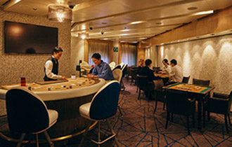
海洋賭場
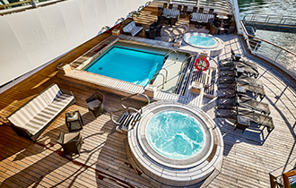
蔚藍泳池
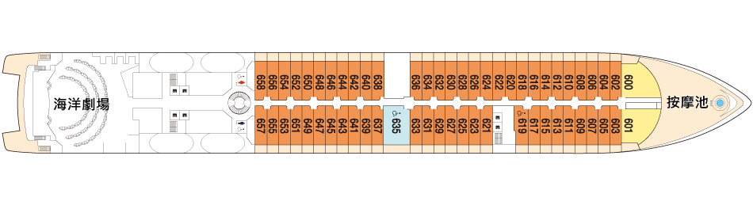
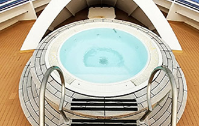
按摩池
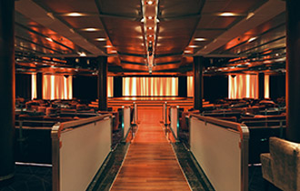
海洋劇場
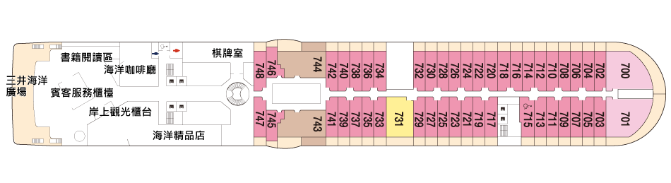
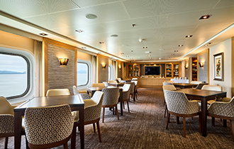
棋牌室
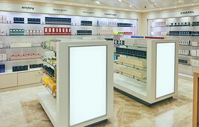
海洋精品店
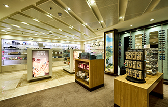
三井海洋廣場
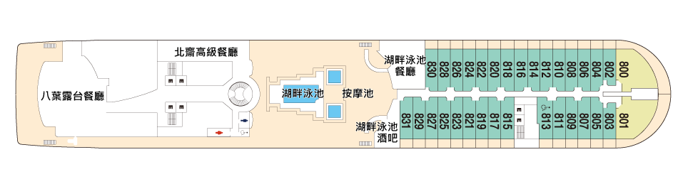
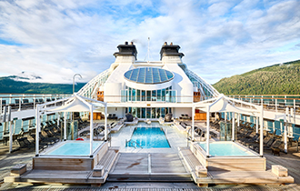
湖畔泳池
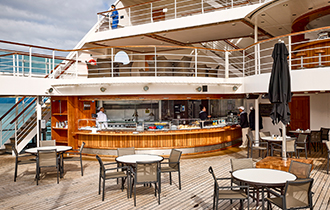
湖畔餐廳
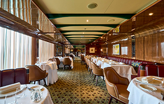
北齋高級餐廳
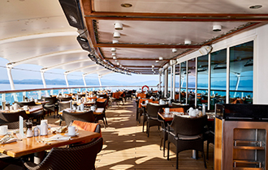
八葉露台餐廳
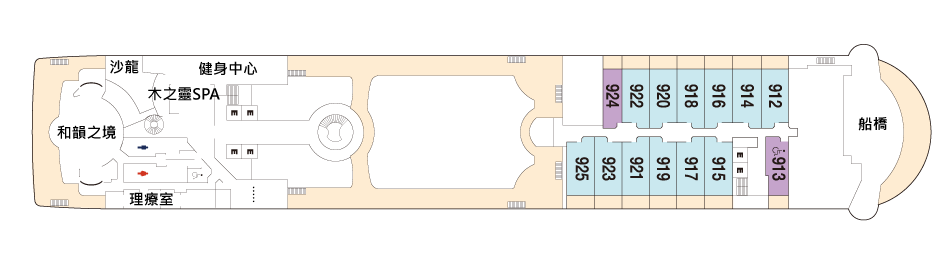
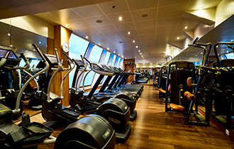
運動中心
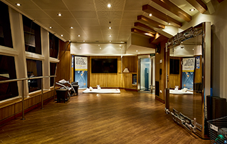
健身中心
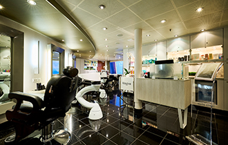
沙龍
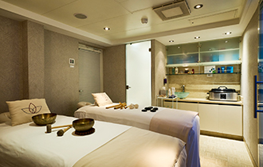
理療室
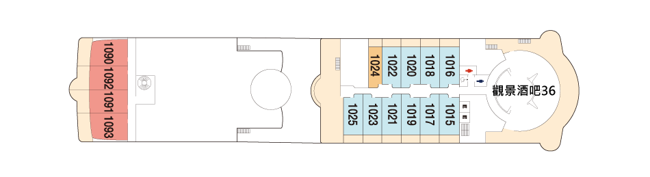
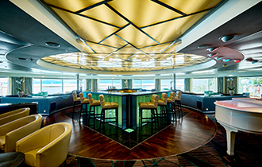
景觀酒吧36
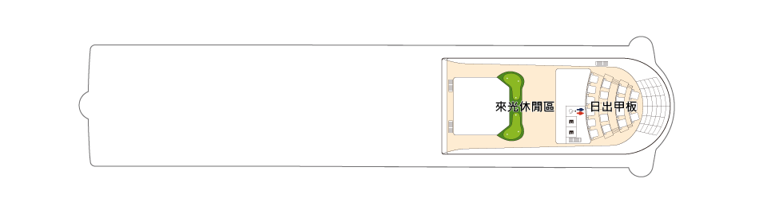
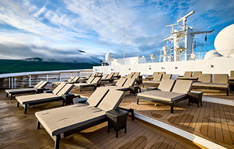
日出甲板
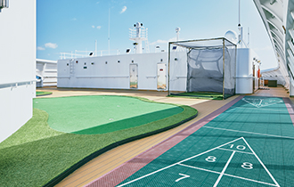
來光休閒區
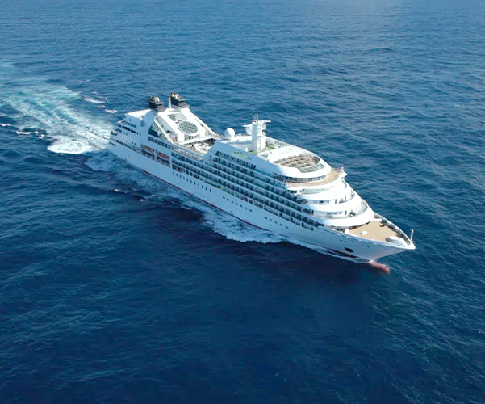
MITSUI OCEAN FUJI
對商船三井而言，睽違 34 年誕生的新船——三井海洋富士號， 其命名源自曾深受無數郵輪旅客喜愛、並於 2013 年退役的「富士丸」， 同時也取意於象徵日本精神的重要存在——富士山。
本船由美國頂級奢華郵輪品牌購入後加以改裝，並於 2024 年 12 月正式啟航，展開嶄新的航程。 三井海洋富士號總噸位 32,477 噸，載客人數僅 458 位，是一艘小巧而精緻的郵輪。正因如此，得以造訪大型郵輪難以靠泊、充滿魅力的特色港口，帶來更深入且獨特的航海體驗。
船上所有客艙皆面向海洋，從晨曦初現到夕陽西沉，旅客皆可盡覽無垠海平線的變幻之美。 船內精心規劃多樣活動，讓旅客親身感受日本傳統文化的深厚底蘊。 同時，也可品味承襲自「日本丸」的匠心美饌，細細體會對食材與料理的極致講究。
洗鍊而雅致的室內設計、嚴選和風食材所打造的佳餚， 以及延續逾 140 年的商船三井郵輪傳統服務精神—— 交織融合而成的，正是 三井海洋富士號。
Q&A
相關問題
在三井海洋郵輪上無需支付小費。
船上設有醫療中心，配有專業醫師與護理人員，為賓客提供基本醫療協助。
- 如您需攜帶氧氣濃縮器或其他醫療設備，請於預訂行程時事先告知您的旅行社，以便安排相關協助
請以優雅休閒（Smart Casual）的裝扮享受郵輪生活。晚間敬請配合遵守船上的服裝規範。相關服裝規定(第29至31頁)，請參閱登船資訊或《 PORT & STARBOARD》船上日報。
三井海洋郵輪配備了減少船身搖晃的裝置（鰭狀穩定器）。若您仍感到擔心，建議自行攜帶適用的暈船藥以備不時之需。船上亦設有醫療中心，提供暈船相關治療服務，惟該服務將另行收費。
每晚送至您套房的《PORT & STARBOARD》船上日報，將詳列隔日的活動資訊以及各項設施與服務的營業時間。
- 內容將包含餐廳與咖啡廳的營業時間與地點、日出與日落時間、各項活動的時間、靠港與登陸資訊、岸上觀光行程等詳細資訊
不得攜帶寵物（動物）登船。
乾洗服務、瓶裝與高級葡萄酒、船上購物、SPA與美容沙龍服務、停靠港口的岸上觀光行程等項目需另外收費。
詳細資訊請參閱《PORT & STARBOARD》船上日報以及各設施的服務目錄。
【自助洗衣】
自助洗衣設施位於5樓甲板，備有洗衣機、烘衣機，以及洗衣精與柔軟精等，歡迎自由使用（24小時開放），不另收費。
【洗衣服務】付費服務
請將洗衣單附於洗衣袋上，並於上午9:00前掛於套房走廊側門把上。
- 本服務不提供乾洗項目，部分精緻衣物可能無法受理，敬請見諒
- 使用自助洗衣設施時，請自行妥善保管個人物品；如發生遺失、失竊或損壞等情形，恕本公司無法負責
可以，船上可使用輪椅。但接駁船及需搭乘接駁船的港口通常不適合輪椅使用者或行動不便的賓客上下船。使用輪椅的賓客須事先提交健康問卷。詳細資訊請參閱第13頁。
若您獲得了船上消費抵用金，該消費抵用金將於登船後自動存入您的船上帳戶。船上消費抵用金等同現金，但僅限於船上使用。相關使用規定，請於登船前向您的旅行社或於登船後向賓客服務櫃檯確認。
如何使用您的船上消費抵用金：
- 岸上觀光行程
- 預約制特色餐飲體驗
- SPA療程
- 船上購物
- 高級與瓶裝葡萄酒、烈酒以及其他項目
✦ 套房內配備兩種電源插座：
- －100V／60Hz，適用於日本與北美地區之A型插頭
- －220V／60Hz，適用於歐洲地區之C型／SE型插頭
如使用日本的電器，請選用 100V／60Hz（A型插頭）插座。
✦ 若您的電器未具備自動變壓功能，請自行攜帶變壓器。使用完畢後，請務必拔除插頭。
✦ 為安全起見，請勿使用非船上提供之高溫電器產品。
✦ 使用電熱水壺時，請務必使用套房內對應插座。
✦ 床邊檯燈設有USB 插孔，可用於為手機等設備充電（部分套房不提供此設備）。
由於本船登記為外籍船舶，即使在日本領海內航行，仍視同位於海外領域。因此對於植物等物品的攜帶進出，將依相關規定受到限制。
✦ 若您欲攜帶植物*入境日本（即從船上帶下），須出示出口國政府機關核發之植物檢疫證明書。
- 植物、水果、蔬菜、穀物、切花、種子、苗木、乾燥花等皆屬限制品項
（請注意即使您在船上獲贈上述物品，如花卉等，下船時亦無法攜帶離船）
✦ 船上餐廳或套房內所提供之水果不得攜帶下船。
✦ 肉類及其加工製品（如香腸、火腿等）不得攜帶入境日本，也不得帶離船隻。
由於本船登記為外籍船舶，海關查驗程序將依海外入境標準辦理。
✦ 下船時，請賓客自行攜帶所有行李，前往櫃檯將「攜帶物品及未隨身物品申報單（海關申報單）」交予現場之海關人員。
✦ 如您有從海外分開寄送的物品（例如大型藝術品），請務必申報。
是的，三井海洋郵輪為外籍註冊船舶，當船舶航行於國際水域時，船上購物可享有免稅優惠。